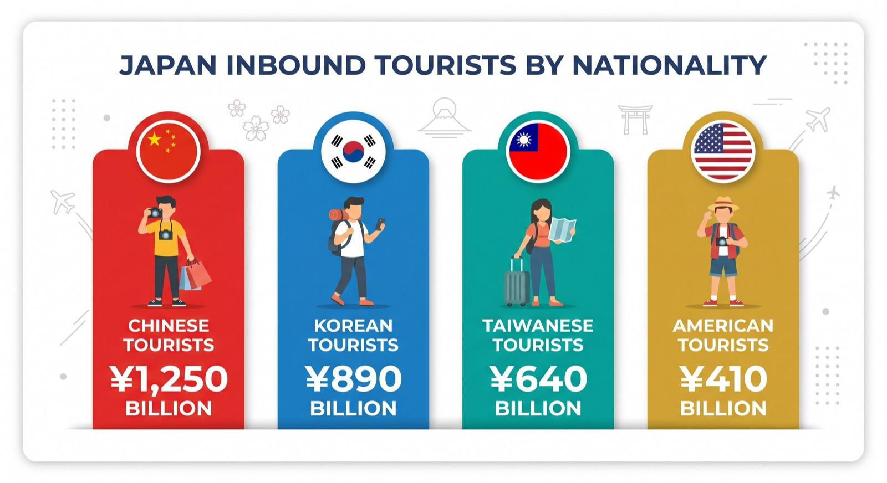

インバウンド集客を成功させるには、「誰が」「何に」「いくら使うか」を正しく把握することが不可欠です。観光庁が発表する訪日外国人消費動向調査をもとに、2026年の最新データから読み解ける集客戦略のポイントをPROTECHが解説します。
訪日外国人の消費総額と国籍別シェア
2025年の訪日外国人による消費総額は約8兆円（観光庁発表）に達し、過去最高を記録しました。国籍別の消費シェアは以下の通りです。
消費シェア約24%
一人当たり約21万円
消費シェア約12%
一人当たり約13万円
消費シェア約11%
一人当たり約7.6万円
消費シェア約9%
一人当たり約23万円
訪問者数は韓国が最多ですが、一人当たりの消費額は中国・米国・オーストラリアが圧倒的に高いのが特徴です。「多く来る客層」と「多く使う客層」を分けて戦略を考えることが重要です。
消費カテゴリ別の傾向
訪日外国人の消費は「買い物」「宿泊」「飲食」「交通」の4カテゴリに大別されます。2025年の平均構成比は以下です。
| 消費カテゴリ | 全体平均 | 中国人 | 韓国人 | 欧米 |
|---|---|---|---|---|
| 買い物（ショッピング） | 30% | 38% | 25% | 20% |
| 宿泊費 | 28% | 22% | 24% | 38% |
| 飲食費 | 22% | 19% | 28% | 22% |
| 交通費 | 12% | 11% | 13% | 14% |
| 体験・娯楽・その他 | 8% | 10% | 10% | 6% |
中国人観光客：ショッピングが突出して高い
中国人旅行者は化粧品・医薬品・食品・家電など「持ち帰れる商品」への消費が最大の特徴です。免税店やドラッグストアでのまとめ買いが多く、一度の旅行で10万円以上を買い物に使うケースも珍しくありません。ただし、近年は「物より体験」へのシフトも見られます。
韓国人観光客：飲食費の割合が最も高い
韓国人旅行者は飲食への支出割合が最も高く、「本場の日本食体験」への関心が強いです。リピーターが多いため、観光地の定番ではなく「地元民が通う店」「SNSで話題の穴場」への志向が高まっています。具体的な集客手法については、訪日韓国人向けインバウンドマーケティング戦略で詳しく解説しています。
欧米観光客：宿泊費・体験への投資が大きい
欧米旅行者は滞在日数が長く（平均14〜21日）、宿泊・体験への消費が多いのが特徴です。旅館・温泉・和食体験・伝統工芸ワークショップなどへの需要が高く、一人当たりの消費額では中国を上回る国も多いです。

「爆買い」から「コト消費」へのシフト
2015〜2016年頃に話題になった中国人観光客の「爆買い」は、現在では大きく変化しています。
- モノ消費の高度化：化粧品・医薬品ではなく、日本の職人が作る伝統工芸品・高級食品への関心が高まっている
- コト消費の拡大：茶道体験・着物レンタル・料理教室・日本酒テイスティングなど、「日本にしかできない体験」への投資が急増
- 地方への分散：東京・大阪・京都の「ゴールデンルート」から離れ、北海道・九州・四国などの地方を訪れるリピーターが増加
- FIT（個人旅行）化：団体ツアーから個人旅行へのシフトが加速。SNSで自分で情報を収集し、独自の旅程を組む傾向
この変化は、飲食店・体験施設・旅館にとって大きなチャンスです。「物を売る」より「体験を売る」コンセプトへの転換が、高単価インバウンド客の獲得に直結します。
消費行動データを集客戦略に活かす3つのアプローチ
① ターゲット国籍を絞って訴求メッセージを最適化
「全国籍向けに訴求」するより、特定の国籍に特化したメッセージの方が費用対効果は高いです。例えば、飲食店なら「韓国人向け＝SNS映え・本場感の訴求」「中国人向け＝特別感・プレミアム体験の訴求」と差別化します。
② 消費ピーク時期に合わせた広告・プロモーション
中国のゴールデンウィーク（国慶節：10月）・春節（1〜2月）、韓国の秋夕（旧盆）など、各国の祝日に合わせてキャンペーンを集中投下することで、限られた予算で最大のリーチを獲得できます。詳しくはインバウンド祝日カレンダー2026をご参照ください。
③ 「体験」をコンテンツ化してSNSで拡散させる
コト消費の増加に伴い、「体験そのものをSNSコンテンツ化」する施策が非常に効果的です。食材の切り方を体験できる料理教室、職人によるものづくり体験、着付け体験など、「やってみた」コンテンツは小紅書・Instagramで高い拡散力を持ちます。
業種別：データに基づくインバウンド施策の方向性
| 業種 | 狙うべき国籍 | 訴求ポイント | 使うべきプラットフォーム |
|---|---|---|---|
| 飲食店・レストラン | 韓国・中国・台湾 | 本場感・映えスポット・シェフのこだわり | 小紅書、大衆点評、Naver |
| 旅館・ホテル | 欧米・中国・台湾 | 日本文化体験・温泉・長期滞在プラン | Instagram、小紅書、YouTube |
| 小売・ドラッグストア | 中国・台湾 | 日本製品の品質・免税対応・まとめ買い | 小紅書、大衆点評、WeChat |
| 体験・観光施設 | 欧米・中国・韓国 | 日本にしかない体験・プレミアム感 | Instagram、TikTok、小紅書 |
| 地方観光地 | 中国・欧米（リピーター） | 非ゴールデンルート・秘境感・自然 | 小紅書、YouTube、Naver |
まとめ：データに基づいた「選択と集中」が勝利の鍵
インバウンド集客において「全方位対応」はリソースの無駄遣いになりがちです。消費データを読み解き、「どの国籍」の「どのニーズ」に「どのプラットフォーム」で訴求するかを明確にすることが、予算を最大限に活かすことにつながります。特に、リピーターを獲得するための地方誘客戦略は、小紅書を活用した観光地・地方創生集客戦略も合わせてご参照ください。
PROTECHでは、観光庁データや各国SNSのトレンド分析をもとに、貴社に最適なインバウンド戦略をご提案しています。データ分析から施策実行まで、ぜひご相談ください。